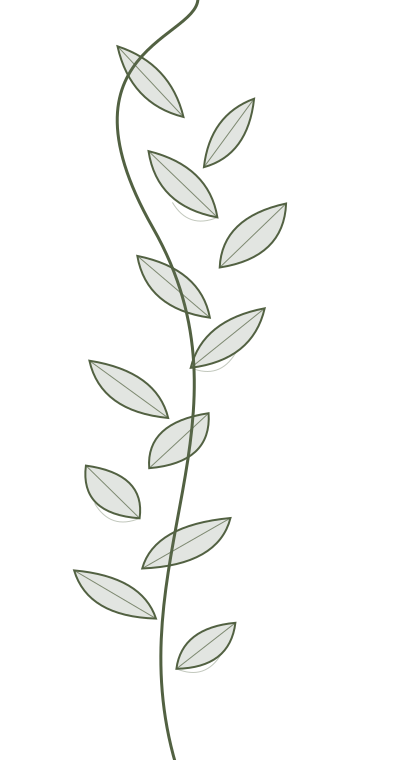
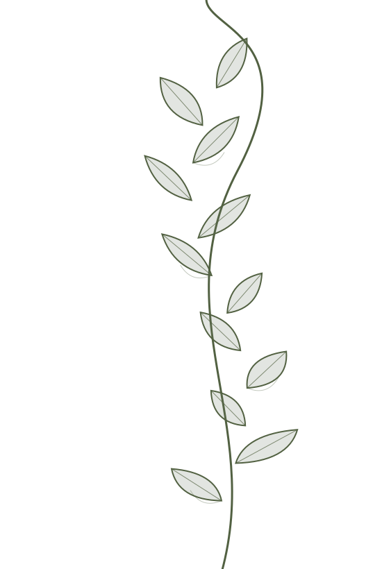

ESTÚDIO AUTORAL · NOVO HAMBURGO, RS
Arte que
floresce na pele.
Blackwork e botânica em tatuagens que carregam histórias, formas e detalhes.

01 / EXPLORE O PORTFÓLIO

TATUAGEM COMO EXPRESSÃO
Na pele,
a natureza
ganha forma.
Do traço fino aos contrastes de tinta preta, cada desenho nasce de referências, intenção e atenção aos detalhes.
 DETALHES QUE CONTAM HISTÓRIAS
DETALHES QUE CONTAM HISTÓRIAS
02 / A TATUADORA
POR TRÁS DOS TRAÇOS
Oi, eu sou
a Camila.
Minha arte encontra inspiração nas formas da natureza, nos traços orgânicos e nos pequenos detalhes que tornam cada desenho único.
Apresentação de portfólio: texto a validar com a Camila antes da publicação.
Me conta sua ideia
03 / O ESTÚDIO
UM ESPAÇO QUE ACOLHE
Cada detalhe
faz parte da arte.
Plantas, tons naturais, luz suave e um espaço pensado para receber você. Conheça um pouco do Aura Tatuada Studio.
04 / VENHA CONHECER
Onde a arte acontece.

05 / VAMOS CONVERSAR
Sua ideia merece
ganhar forma.
Tem uma referência, um desenho ou uma ideia em mente? Entre em contato e converse sobre o seu próximo projeto.
Conversar com a CamilaWhatsApp: +55 51 99871-3610 · Instagram: @auratatuada